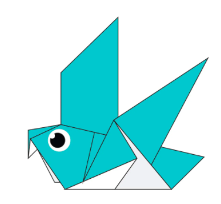
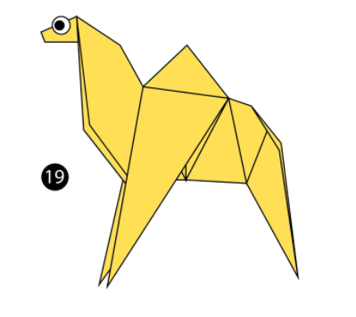

Origami Chameleon
Interesting Facts About Chameleons
- Chameleons are reptiles that are part of the iguana subborder
- Changing skin color is an important part of communication among chameleons
- Most chameleons have a prehensile tail that they use to wrap around tree branches
Origami Pigeon

Interesting Facts About Pigeons
- Pigeons are incredibly complex and intelligent animals
- Pigeons are reowned for their outstanding navigational abilities
- Pigeons have excellent hearing abilities
Origami Teddy Bear
Interesting Facts Teddy Bears
- Teddy bears got their name from the story that Teddy Roosevelt refused to shoot a bear cub while on a hunting trip in 1902.
- The first toy stuffed bear was created by German toymaker Margarete Steiff
- She created a soft plush with movable arms and legs and a friendly face after taking her nephew to the zoo in 1903
Origami Camel

Interesting Facts About Camels
- Camels have three sets of eyelids and two rows of eyelashes to keep sand out of their eyes.
- Camels have thick lips which let them forage for thorny plants other animals can't eat.
- Camels bears a distinctive fatty deposits known as "humps" on its back.